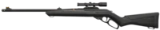

Marshal
The Marshal is a low cost sniper rifle. As a sniper, it has a scope with a single zoom setting on its Alternate Fire mode that has perfect accuracy when standing still. Despite sniper rifles usually being extremely inaccurate when used in Primary Fire mode, the Marshal is surprisingly accurate in this case, meaning it can be used to take on multiple enemies at once so long as the user can hit their shots.
|
Damage
|
| 0 - 50m |
| Head - 202 |
| Body - 101 |
| Leg - 85 |

Operator
The Operator is a high-cost sniper rifle and the most expensive gun in the game. As a sniper, it has a scope with two zoom settings on its Alternate Fire mode that has perfect accuracy when standing still. The Operator's Primary Fire accuracy on the other hand is extremely inaccurate.
|
Damage
|
| 0 - 50m |
| Head - 255 |
| Body - 150 |
| Leg - 120 |